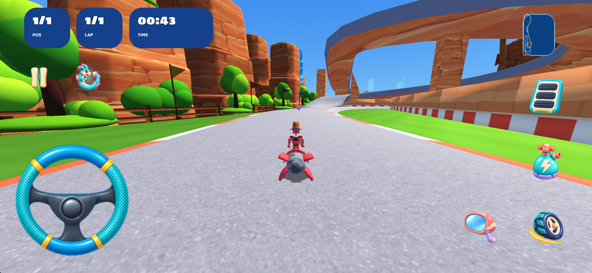
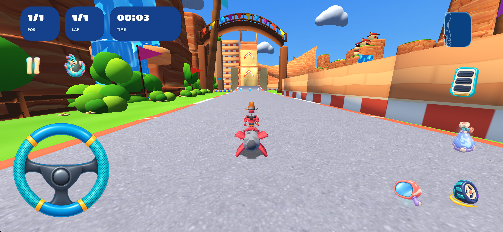
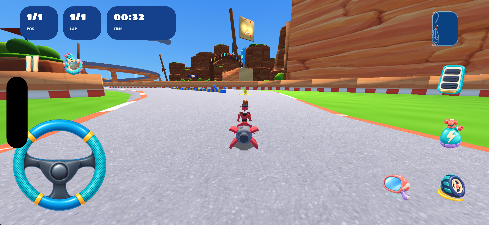
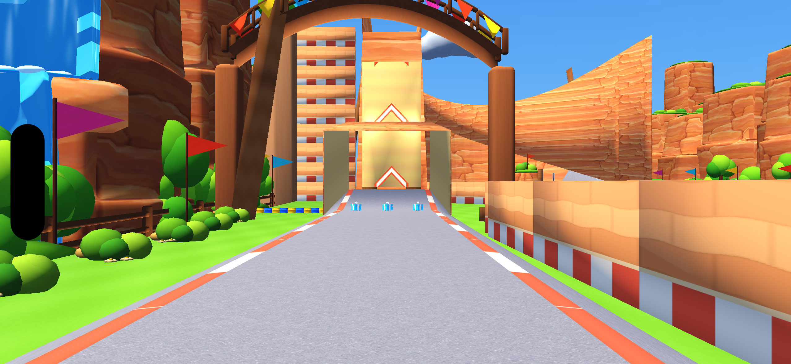

Fluxara Canyon
295 запечённых экземпляров перенесены в 47 общих игровых моделей. Прежний каньонный стиль, дома, скалы, вода и окружение сохранены. Пять дополнительных кустов используют существующую общую библиотеку.
Изменённый Blender-проект · Проверки
| Измерение | Результат |
|---|---|
| Папка до переноса | 23,71 МБ |
| Текущая карта плюс все новые общие модели | 21,78 МБ; уменьшение на 1,93 МБ |
| Новые общие модели | 136,478 байт |
| Текстура общих моделей | Исходный атлас уже находился в установленном приложении; повторно проверен по SHA-256, дополнительной копии нет |
| Геометрия окружения с экземплярами | 344,684 → 345,584; добавлены только 900 треугольников пяти кустов |
| Распакованное приложение | 294,53 МБ, Debug iOS Simulator |
До замены превью перенос геометрии и пять кустов уменьшили установленное приложение на 632 617 байт. Остальное уменьшение связано с новым превью. Размер IPA и скачивания из магазина здесь не измерялся.
Скриншоты




Сохранность
Дорожный меш, маршрут, контрольные линии, стартовые и игровые точки, музыка и остальные модели совпадают с исходными файлами. Первоначальные узлы сцены и физические материалы сохранены. В оставшемся меше окружения все записи вершин и порядок треугольников сохранены побайтово.
У перенесённых экземпляров локальные позиции восстановлены обратным преобразованием. Проверены топология, UV, цвета и соответствие мировой геометрии с погрешностью менее 0,001 м; у упакованных нормалей остаётся малая погрешность квантования. Новые кусты опираются на исходные зелёные поверхности: по 13 выборок на каждый. 1100 вершин новых моделей проверены по дорожному коридору; перекрытия не найдены. Это проверка вершин и выборок, а не непрерывная симуляция столкновений.
Blender-файл повторно открыт: недостающих текстур нет, 326 частей общих экземпляров совпадают с экспортными матрицами. После регистрации привязки материалов и объектов карт 6–10 также повторно проверены. Все используемые ресурсы существуют в физическом общем пакете.
Проверка игры
Исходник, версия после переноса и итог с пятью кустами прошли обычную гонку на один круг до естественного финиша. Принудительная победа не использовалась. Обратное направление, четыре круга события кампании и производительность не проверены. Превью — свежая камера осмотра в игровом движке без HUD; применены только центральная обрезка и масштабирование.
Это результат первого этапа переноса первой карты. Общая работа по наполнению и переиспользованию всех карт 1–10 продолжается; визуальное согласование этой версии не записано.